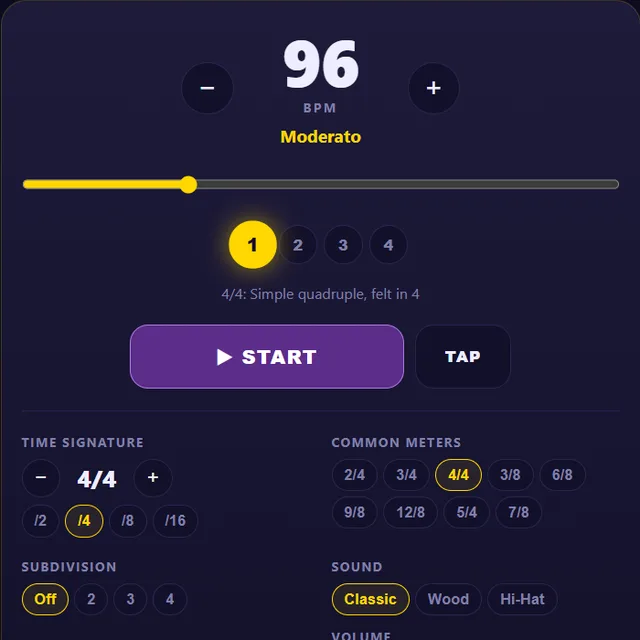
Metronome
Online Metronome
20 to 300 BPM, tap tempo, any time signature up to 16 beats with the accents you choose, subdivisions and three click sounds.
Open the metronomeTools
Twelve browser tools for musicians: a metronome, timing and ear tests, a speed trainer, drones and a chord finder. No download, no account, no cost.

Metronome
20 to 300 BPM, tap tempo, any time signature up to 16 beats with the accents you choose, subdivisions and three click sounds.
Open the metronome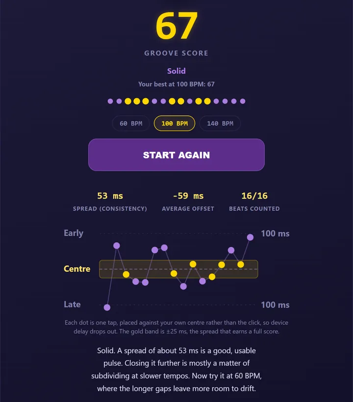
Timing
Tap along for 16 beats and get a timing score out of 100, your spread in milliseconds, and whether you rush or drag.
Open the rhythm test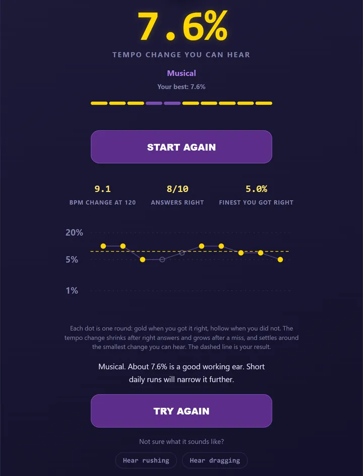
Ear
Hear a drum groove creep faster or slow down and call it. The test finds the smallest tempo change your ear can catch, as a percentage.
Open the rushing or dragging test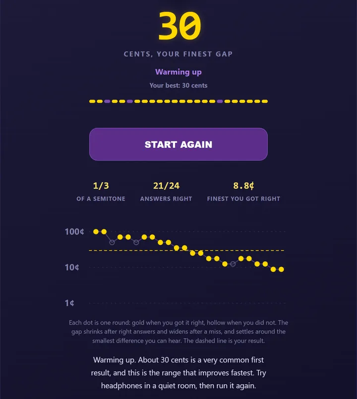
Ear
Pick higher or lower and the notes close in until the test finds the smallest pitch difference you can hear, in cents.
Open the pitch test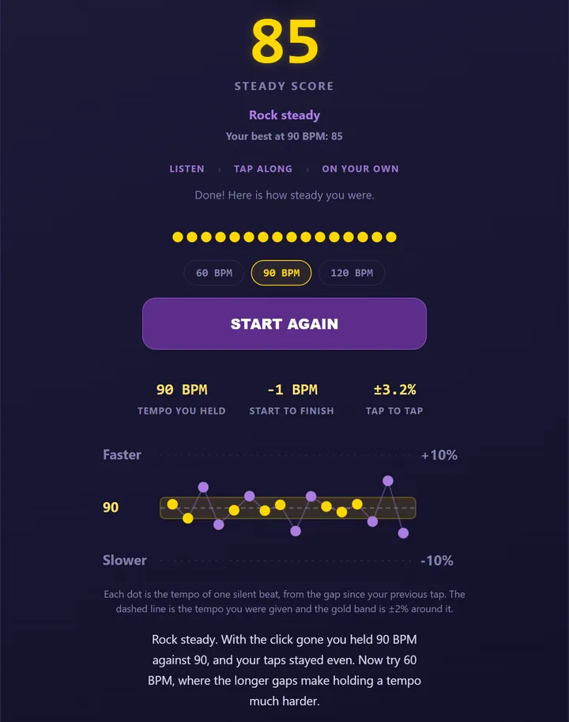
Timing
Tap along, then keep going when the click stops. See the tempo you held and how even your beats were.
Open the steady tempo test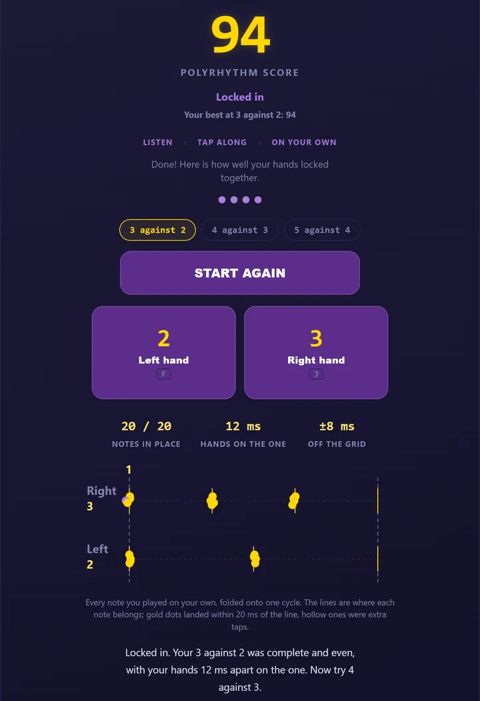
Two hands
Tap 3 against 2, 4 against 3 or 5 against 4 with both hands and see how well they lock together.
Open the polyrhythm test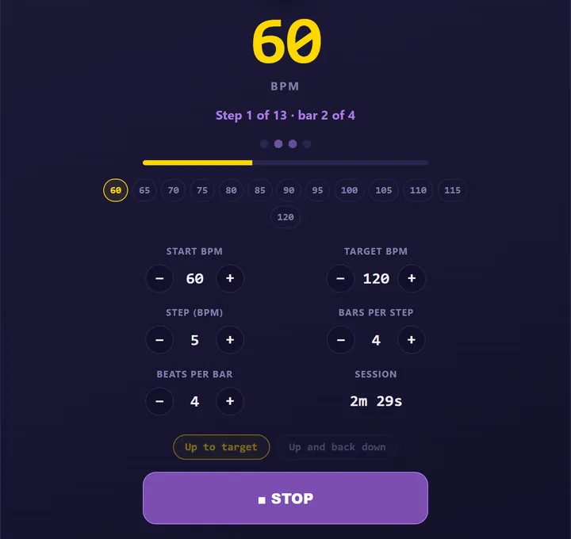
Practice
A metronome that speeds up by itself, step by step, and can bring you back down.
Open the speed trainer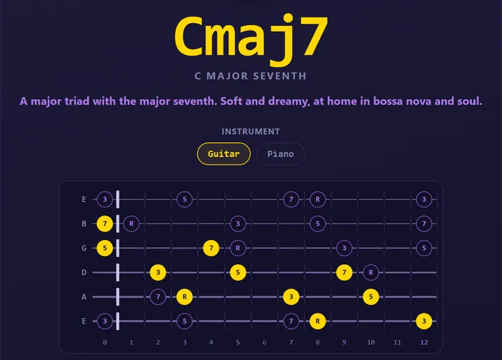
Chords
Tap the notes on a guitar or piano and get the chord name, every note spelled from its root, and hear it played back.
Open the chord finder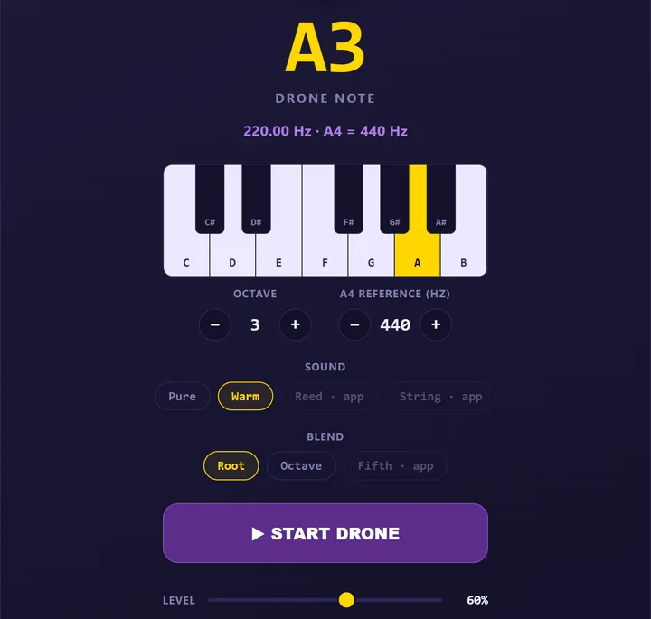
Intonation
Hold any note from C2 to B5 at any reference pitch and tune your playing against it by ear.
Open the tuning drone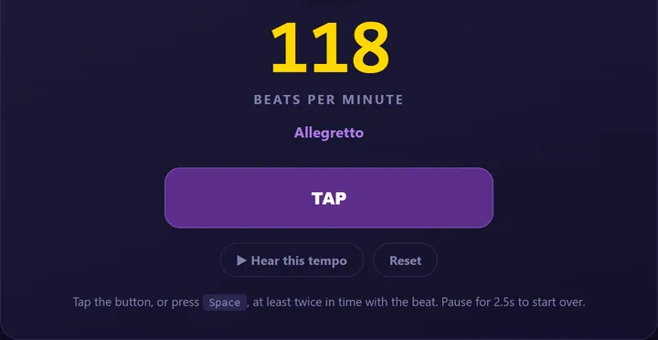
Tempo
Tap along with a song to find its BPM and tempo marking, then hear it back as a steady click.
Open the BPM finder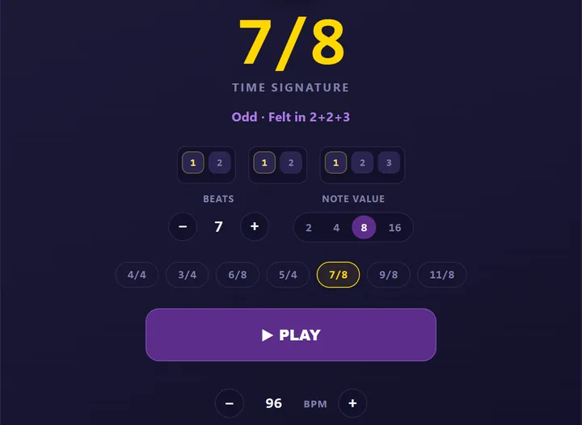
Time signatures
Pick any time signature up to 13/8 and hear it clicked with its natural accents, group by group.
Open the odd meter metronome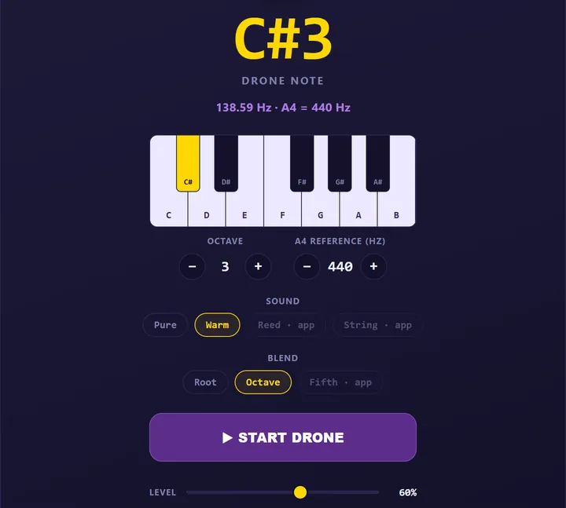
Indian classical
Pick your Sa and hold it as a steady drone with the upper Sa added, like a tanpura, for swara practice.
Open the shruti boxGuides
Simple, compound and odd meters in one guide, with a chart of the common ones: how each is grouped, how to count it, music to hear it in, and a link that sets the metronome to it.
Each tool measures or trains one thing. If you are not sure where to start, pick the goal closest to yours.
Start with the rhythm test. It tells you two separate things: your average offset (whether you sit ahead of the click or behind it) and your spread (how much your taps scatter). They need different fixes. A consistent offset is a habit you can correct by listening; a wide spread means the beat itself is not yet steady, which slow practice with subdivisions fixes. Then try the steady tempo test, which takes the click away and shows whether you speed up or slow down on your own.
Use the speed trainer. Set the tempo you can play cleanly as the start and the performance tempo as the target, and let it climb a few BPM every few bars. If it falls apart at a step, the step was too big. The reasoning is in how to practise increasing BPM.
The online metronome covers everyday practice, with tap tempo and accents. For a meter like 7/8 or 11/8, the odd meter metronome shows the count group by group, and time signatures explained charts the common meters. To find the tempo of a recording, use tap tempo.
Hold a note on the tuning drone and play scales or long tones against it: when you are out of tune you hear a slow wobble (beating) that stops when you land on the pitch. Singers in Hindustani and Carnatic music can use the shruti box preset to their Sa. The pitch test shows how small a pitch difference you can hear, which is the limit of what you can correct by ear.
The chord finder names any chord you tap on a guitar or piano and spells its notes, which helps when a chart lists a chord you do not know or a shape you found has no name. The guide to how chords work explains the naming.
The polyrhythm test scores 3 against 2, 4 against 3 and 5 against 4, and shows which hand drifts.
All of these work in a lesson on a laptop or a phone, and most can be embedded on a school or studio page. The tests give students a number they can try to beat next week, and the rhythm test result is a useful starting point for a conversation about rushing and dragging.